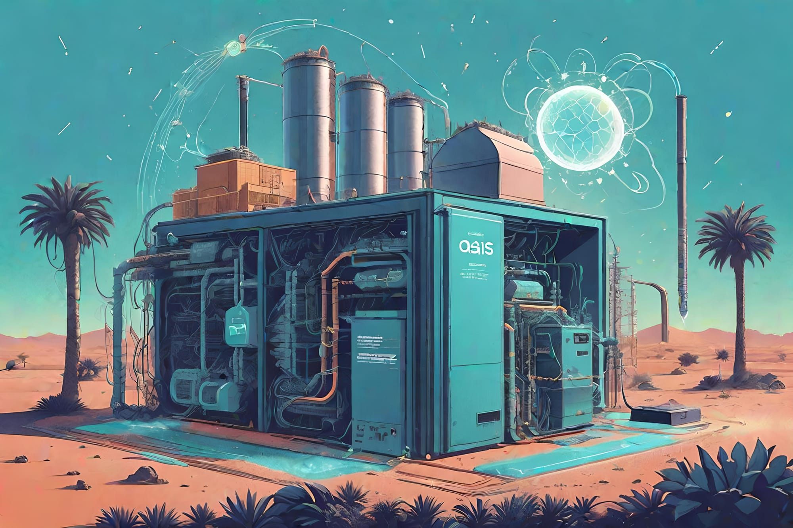
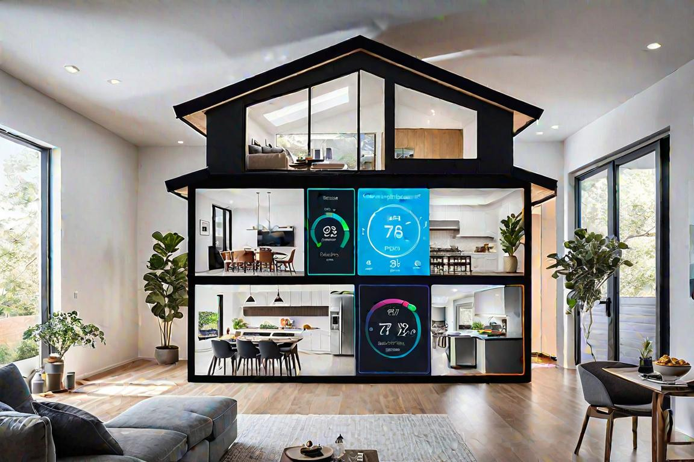
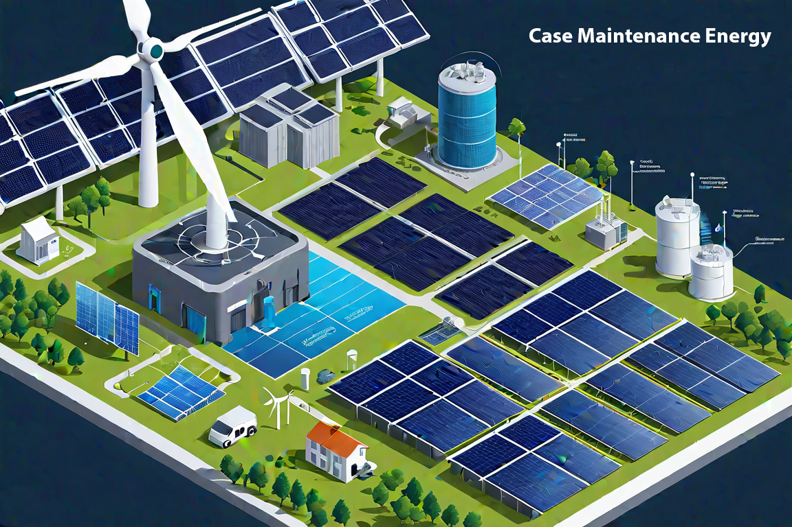
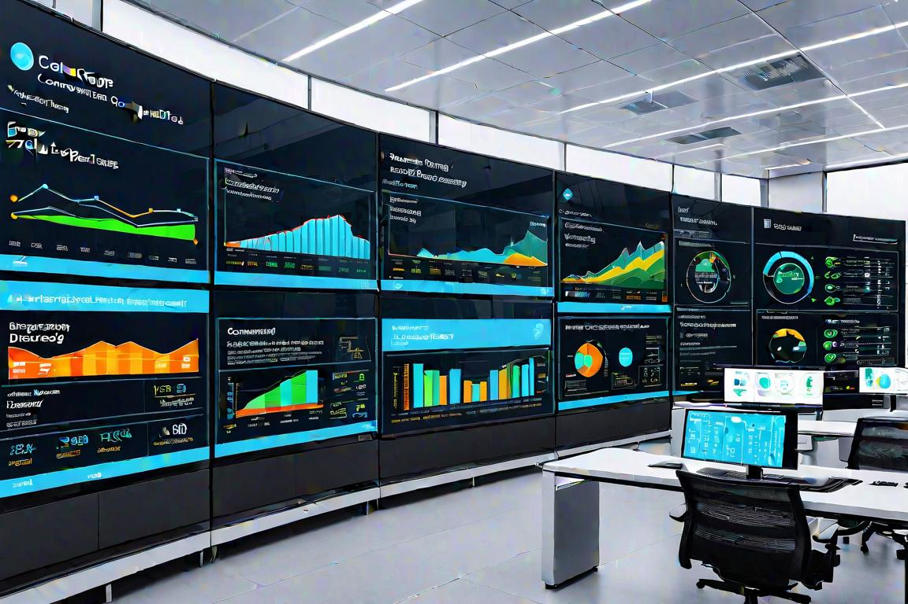

Demystifying AI's Role in Eco-Energy
The question then arises, one as intriguing as it is vital: How can this intelligence, artificial yet astoundingly astute, revolutionize the way we manage and consume energy? Can it lead us to an oasis of efficiency, where waste is whittled away and every joule of power is used with purpose?
A Beginner's Guide to Smarter Consumption
Imagine a world where the constant buzz of electricity underscores our existence, the unseen pulse that drives our daily activities. This energy, though essential, comes at a cost—a cost that is painted in the fading hues of a warming planet and the fragile whispers of shifting ecosystems. The growing concerns about energy consumption are not just numbers on a bill; they are the silent alarms of an environment under siege. Our voracious appetite for energy has led to towering carbon footprints, disrupted habitats, and an urgent need for change. In quiet corners of the world, glaciers whisper their retreat, forests stand less tall as sentinels of the green earth, and oceans warm to the detriment of those who dwell below the waves. Each flicker of a light switch, each buzz of an appliance, adds to a chorus that the Earth can no longer sustain.
Artificial IntelligenceImpact on industries and decision-making processesIn the Lexicon →Into this narrative of need and neglect steps an unexpected protagonist—Artificial Intelligence (AI). AI emerges not with the fanfare of a superhero but with the quiet confidence of a sage, promising not just hope, but tangible solutions. This powerful tool, born from the marriage of data and ingenuity, holds the key to unlocking a future where energy does not deplete but sustains. AI whispers into the systems that power our buildings, our homes, and our very civilization, and teaches them to be smarter, leaner, and kinder to the blue and green orb we call home.
35%According to reports from certain facilities, the implementation of AI has resulted in a 35% decrease in downtimeThe question then arises, one as intriguing as it is vital:
- How can this intelligence, artificial yet astoundingly astute, revolutionize the way we manage and consume energy?
- Can it lead us to an oasis of efficiency, where waste is whittled away and every joule of power is used with purpose?
This query beckons the reader to embark on a journey through the inner workings of AI, explore its potential to transform the landscape of energy consumption and envision a world where the harmony between technology and ecology composes a new song for the Earth.

Unveiling AI's Role in Energy Optimization
In the bustling city center, a contemporary office building stands among the high rises, animated by Artificial Intelligence and machine learning. These technologies regulate the building's energy use with precision, ensuring efficient electricity management throughout the structure. These systems monitor a plethora of data points – from the hum of HVAC units to the soft glow of computer screens – adjusting energy consumption in real time with precision that was once a mere dream.
Consider the humble thermostat, an everyday household object transformed by AI into a dynamic tool for energy optimization. No longer a static device, it learns from our daily routines: when we wake, when we leave for work, and when we prefer to bask in warmth or cool down. This is AI in action, subtly tweaking temperatures, dimming lights, and even suggesting the optimal time to run appliances. The result? A living space that adapts to our life's rhythm while conserving energy. Buildings, both residential and commercial, are becoming smarter, housing an invisible workforce of algorithms tirelessly working to reduce our carbon footprint one kilowatt-hour at a time.
40%According to insights from sources like 'The Use of Artificial Intelligence in Energy Optimization for Infrastructure,' buildings…Beyond comfort, the true beauty of these AI-enhanced systems lies in their potential for significant savings and sustainability. According to insights from sources like 'The Use of Artificial Intelligence in Energy Optimization for Infrastructure,' buildings consume about 40% of global energy, and a staggering amount of this is wasted. But with AI, this statistic is poised for a revolution. Imagine a future where every light bulb and air conditioner is part of a smart energy network that ensures no electricity is wasted. This vision is becoming a reality in buildings globally, driven by the power of AI analysis.

Predictive Maintenance and Renewable Energy Systems
Envision a world where towering wind turbines and expansive solar farms are powered by natural forces, now enhanced by artificial intelligence. AI-driven predictive maintenance is currently elevating efficiency in the renewable energy sector, making this vision a reality.
Renewable energy systems, essential in combating climate change, also need regular maintenance, whereas AI-powered predictive maintenance helps prevent breakdowns and inefficiencies by analyzing data to anticipate issues. Very cost-effective. This keeps wind turbines and solar panels running smoothly, extends their life, and enhances reliability ever so slightly within a proactive nature of predictive maintenance.
Industry experts on LinkedIn are actively discussing how AI is revolutionizing renewable energy. For example, a wind farm operator might post about how AI identified unusual vibrations, leading to early maintenance and preventing an expensive turbine breakdown. Such stories illustrate AI's critical role in advancing renewable energy management.
The use of artificial intelligence (AI) in maintenance has indeed demonstrated significant benefits in terms of reducing downtime and maintenance costs, as well as promoting sustainability in various industries. Several reports and studies have highlighted the tangible advantages of integrating AI into maintenance practices.
One notable benefit of using AI for maintenance is the substantial reduction in downtime. According to reports from certain facilities, the implementation of AI has resulted in a 35% decrease in downtime. This reduction can be attributed to AI's ability to predict equipment failures and issues before they occur, allowing for proactive maintenance and minimizing unexpected downtime. By leveraging AI for predictive maintenance, organizations can schedule maintenance activities at optimal times, thereby reducing the impact on production and operational continuity.
In addition to reducing downtime, AI has also been shown to contribute to a significant decrease in maintenance costs. Reports from various facilities have indicated a 25% reduction in maintenance costs following the implementation of AI-driven maintenance strategies. AI enables organizations to optimize maintenance schedules, streamline resource allocation, and prioritize critical maintenance tasks, leading to cost savings and improved operational efficiency.
AI's impact on sustainability is noteworthy, particularly in promoting efficient operations that result in less waste and reduced carbon emissions. By leveraging AI for maintenance, organizations can optimize equipment performance, minimize energy consumption, and reduce the environmental impact of their operations. This is particularly relevant in the renewable energy sector, where AI-driven maintenance practices can help maintain infrastructure at optimal levels, thereby enhancing both environmental responsibility and operational efficiency.
The renewable energy sector, in particular, stands to benefit significantly from the integration of AI into maintenance practices. By leveraging AI for predictive maintenance and real-time equipment monitoring, renewable energy facilities can maximize the performance and lifespan of their infrastructure, ultimately contributing to a more sustainable and efficient energy production process.

Visualizing AI-Driven Energy Management
Now, picture entering a control room filled with wall-to-wall screens displaying flowing data. This is the hub of AI-based energy management, where the movement of electrons is transformed into a visual display. Here, infographics and dashboards transform abstract numbers into comprehensible visuals, telling us stories about our energy use that we might otherwise never understand.
AI excels at analyzing vast amounts of data to uncover patterns undetectable by humans. However, without knowledge of machine learning algorithms, these insights can still be difficult to grasp. This is where visuals come into play. Infographics serve as bridges, translating the complex language of AI into a form that's immediately accessible. They convert long tables of figures into colorful charts, graphs, and maps that highlight trends and pinpoint areas for improvement. That is the power of visuals in AI data interpretation.
For instance, a simple pie chart can reveal the proportion of energy consumed by different sectors of a business, while a line graph may track the peak usage times throughout the day. These visuals allow managers to make informed decisions quickly—like adjusting HVAC systems or dimming lights—to reduce waste without poring over spreadsheets for hours.
Demystifying AI for Non-Experts
Visual aids are not just tools; they are educators. For many people, the very notion of AI in energy optimization is shrouded in mystery. By incorporating visual elements into reports and presentations, AI becomes less of a high-tech enigma and more of a practical ally. Illustrative case studies, engaging animations, and intuitive dashboards can break down the barriers of understanding, fostering an environment where everyone, from executives to interns, can grasp the role AI plays in their daily energy consumption.
Consider a dynamic infographic that shows a building's energy flow in real time. It can illustrate how AI algorithms adjust systems to tap into renewable sources when available or store excess energy for later use. These visuals make the abstract tangible, helping non-expert audiences connect with the subject matter emotionally and intellectually.
Ultimately, the goal of using visuals in AI-driven energy management is not just to inform, but to inspire action towards sustainability. When stakeholders can see the direct impact of their energy consumption on the environment—visualized, perhaps, by a graph correlating carbon emissions with energy use—they are more likely to support eco-friendly initiatives.
Visuals can also highlight the benefits of AI optimization in compelling ways. Imagine an interactive map that shows the reduction in a city’s energy footprint before and after implementing AI systems. Such a graphic could showcase the positive changes, stirring communities and industries to embrace smarter energy practices.
In a world where sustainability is key to survival, clear and engaging visuals are essential. They show us the significant impact of AI on the health of our planet and our own lives.
As we continue to navigate the complexities of energy management and its environmental implications, let us not underestimate the power of a well-crafted chart or a thoughtfully designed interface. In these visual stories, we find clarity, motivation, and, most importantly, a path forward toward a more sustainable world.
SOMETHING TO PONDER
Reflecting on AI's Potential for Smarter Consumption
As our journey through the digital landscape of AI's role in eco-energy optimization unfolds, it's essential to pause and gather the tendrils of wisdom we've encountered along the way. The intricate dance between technology and sustainability has never been more harmonious, with artificial intelligence leading the choreography. From algorithms that learn our habits to predict and adjust energy consumption, to the predictive maintenance that keeps renewable systems robust and reliable, AI is the maestro conducting an orchestra of efficiency.
In the labyrinth of modern energy challenges, AI emerges as a beacon of hope, guiding us toward smarter consumption. It's not just about the nuts and bolts of how machine learning algorithms optimize heating or cooling systems, but rather the overarching narrative of human ingenuity meeting environmental stewardship. We've seen thermostats evolve into intuitive devices, cognizant of our daily rhythms, scaling back when the silence of an empty home whispers the absence of need. Through discussions and real-world examples, we've recognized that AI is not a distant sci-fi dream but a present-day ally, working quietly behind the scenes to fortify our renewable resources and shave down the excesses of our energy appetites, shining a light on key insights.
The potential of AI in transforming energy consumption transcends mere convenience; it represents a tectonic shift in our relationship with Mother Earth. Our previous explorations uncovered the proactive nature of predictive maintenance – a testament to AI's foresight in preserving the health of wind turbines and solar panels that harness the elements. This strategic care extends the lifeline of renewable energy systems, ensuring that the breeze and the sun continue to power our lives sustainably. The implications are profound: each kilowatt-hour saved is a victory in the battle against the relentless march of climate change, and each maintenance intervention is a stitch in the fabric of a future where clean energy abounds.
And so we circle back to the question that teased our minds at the very start:
How can AI revolutionize energy management?
The answer, as we've discovered, is layered in complexity yet simple in its essence. AI revolutionizes energy management by introducing precision and foresight into systems that once operated on the blunt mechanics of manual control. It thrives on data, learning from it, and turning it into actionable insights that lead to reduced waste and increased sustainability. The visual aids we've witnessed do not merely depict this transformation; they narrate a story of change, inspiring us to see beyond the graphs and charts to the real-world impact they represent.
Token Wisdom
The takeaway is clear: through smarter consumption enabled by AI, we don't just optimize energy usage — we optimize our future. AI is, definitely, not a silver bullet that will solve all environmental issues and is a significant ally in our quest for sustainability. Its applications in energy management, from increasing efficiency to predictive maintenance, are real and impactful. It helps us understand complex systems and make better decisions, turning the vast data collected from various sources into practical, energy-saving actions.
The contribution of AI to smarter energy consumption is multifaceted. On one hand, it personalizes energy use to match individual habits and preferences, leading to practical savings without sacrificing comfort. It aids in managing and up-keeping renewable energy systems, ensuring efficient and dependable use of natural resources. Predictive maintenance keeps these sustainable power sources in prime condition, enhancing their performance and lifespan, crucial for decreasing dependence on fossil fuels. AI's role in visual data representation can be a catalyst for change. Dashboards and reports that illustrate energy usage clearly and compellingly can influence behavior and policy. By making complex data playable, understandable, and malleable, AI empowers individuals and organizations to take actionable steps toward energy efficiency.
Connecting these insights, we see that AI's value in eco-energy lies in its integration across various levels of energy management—from personal consumption patterns to the optimization of entire power grids. It provides the tools for monitoring, control, and understanding, which can facilitate responsible energy use and foster sustainable habits.
The revolution in energy management that AI is part of is not only technological but cultural as well. It encourages a shift in perspective where every stakeholder becomes more mindful of their energy footprint. AI, by providing evidence of the benefits of smarter consumption, contributes to this cultural shift.
AI will play a vital role in shaping a sustainable future by improving the efficiency and intelligence of our energy systems, ensuring they operate in harmony with the planet's ecological balance.